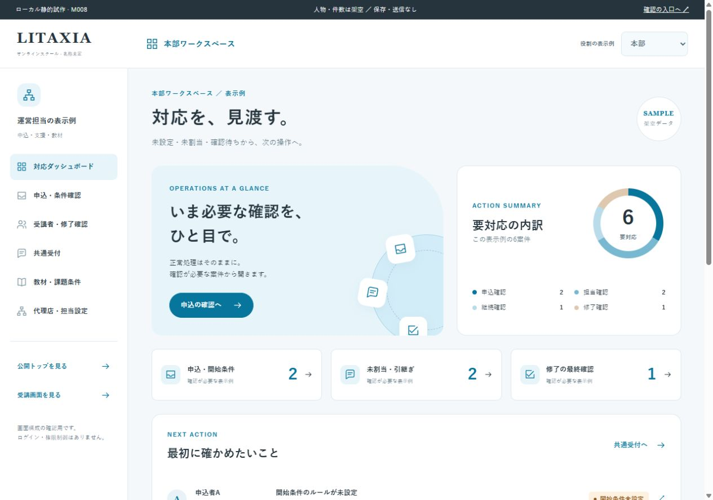
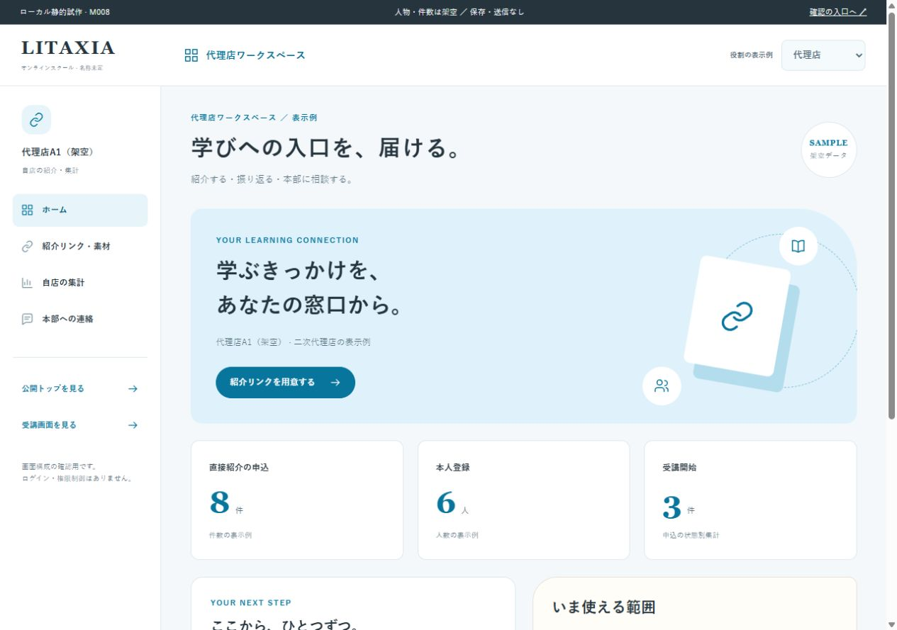
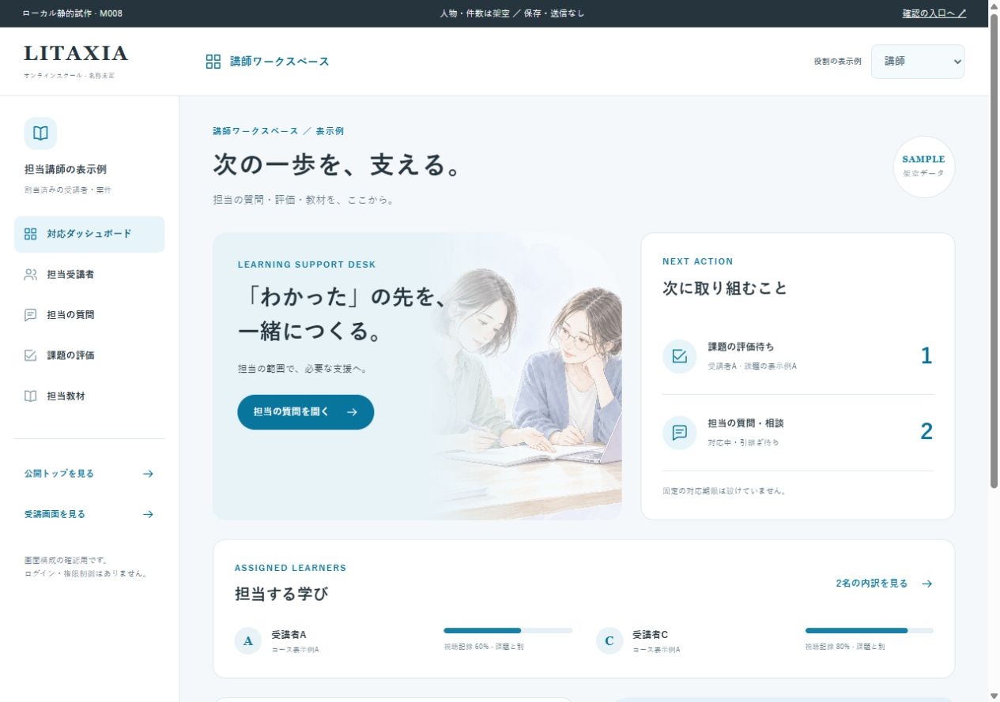

HEADQUARTERS本部
未処理と、その理由を見渡す。

DESIGN REVIEW · 2026.10.23
スカイブルーを基調に、役割ごとに見たい情報を整理しました。
未処理と、その理由を見渡す。

紹介する、振り返る、相談する。

質問と評価を、学びにつなぐ。

PUBLIC SITE / VISUAL UPDATE
切替式の学び紹介、イラストと短文、
仕事の依頼例、個別対応の丸い帯、料金のチケット。
本部6画面・代理店4画面・講師5画面の導線、絞り込み、詳細、評価や返信のプレビュー。公開トップの視覚的な整理。
人物・数字・評価基準は架空です。役割切替はデザイン確認用。登録・保存・送信・権限付与・決済は行いません。
learningBOXの用途別入口とグラフ、Schooの段階分け、デジLIGなど既存参考の人物・背景面・帯を、本案件の情報に合わせて構成。第三者の素材・実績は転用していません。